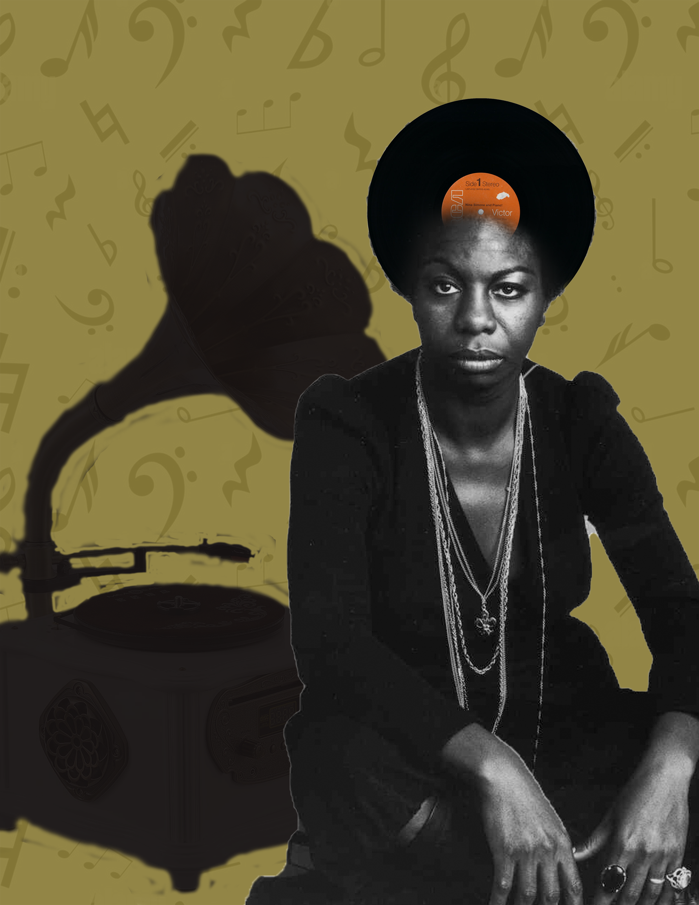
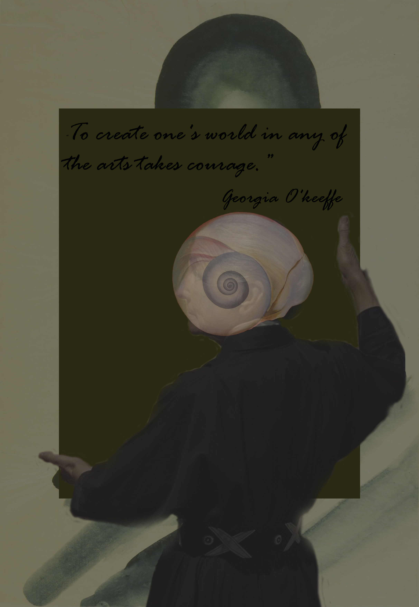

First steps in Photoshop. Collages


ფოტოშოპი არის პროგრამა, რომელსაც ძალიან ბევრი დეტალისა
და ფუნქციის გათვალისწინებით, უამრავი ვიზუალური პროდუქტის შექმნა შეუძლია. ჩემი პირველი ნაბიჯები
ფოტოშოპში კოლაჟების შექმნას უკავშრდება. კოლაჟების დახმარებით, კრეატიული და ფანტასტიკური იდეების
განხორციელებაა შესაძლებელი. ჩემთვის მნიშვნელოვანია ხელოვნება, ამიტომ პირველი კოლაჟებიც მუსიკასა
და ფერწერასთან დაკავშირებული მინდოდა ყოფილიყო.
Three-part banner for outdoors

ვიზუალურად ყოველთვის მომწონდა, რამდენიმე ბანერი თუ პოსტერი ერთად რომ ერთ მთლიანობას ქმნიდა.
მსგავს ნამუშევრებს დამოუკიდებლადაც აქვს რაღაც დატვირთვა და მთლიანობაში კი ბევრად შთამბეჭდავია.
როდესაც მსგავს პროექტს თავად ქმნი, მეტი ლავირების საშუალება გაქვს. აქაც ხელოვნების სიყვარულით
ვიხელმძღვანელე.
ვთვლი, რომ მსგავსი ნამუშევარი outdoors-ში მარტივ და მოსაწყენ სივრცეებს ალამაზებს.
Color the Past
ალბათ, თითოეულ ჩვენგანს დაუთვალიერებია წინაპრების აწ უკვე გაქექილი, გაფუჭებული და სახედაკარგული სურათები.
გარდა ამისა, შეიძლება იმაზეც უფიქრია, ვის რა ფერის სამოსი ეცვა იმ მომენტში, როდესაც შავ-თეთრ ფოტოს
ფერად სამყაროში იღებდა. ფოტოშოპი წარსულის გაცოცხლებაშიც გვეხმარება. ჩემი პირველი მცდელობები, ძველი
ფოტოების გაფერადებისა, შეგიძლიათ, აქ იხილოთ.
There is a whole world in simple Geometry
ზოგჯერ სულაც არ არის საჭირო ბევრი უნარი და დეტალი გამოვიყენოთ იმისთვის, რომ ფოტოშოპში
ლამაზი ვიზუალი შევქმნათ. გეომეტრიული ფიგურები და მათი კომბინაციები საინტერესო გამოსახულებების
მიღების მარტივი გზაა. მსგავსი პოსტერები მარტივად შეგვიძლია შევუხამოთ ინტერიერს. ასევე, მსგავსად
შეგვიძლია გავაფორმოთ საკანცელარიო ნივთები, მაგალითად, ბლოკნოტების ყდები და ა.შ.
Online campaign to protect animals
ერთ-ერთი გამოწვევა, ჩემი და ფოტოშოპის ურთიერთობის გზაზე, ონლაინ კამპანიების შექმნა იყო.
ნებისმიერი ონლაინ კამპანია ვიზუალურად მარტივი და გასაგები უნდა იყოს, რათა მაყურებელმა
შემქმნელის სათქმელი სრულად გაიგოს. ცხოველები ჩემთვის უმნიშვნელოვანესი არსებები არიან.
პიროტექნიკა ყოველწლიურად ათასობით ცხოველის სიცოცხლეს უქმნის საფრთხეს, ამიტომ ვეცადე,
ჩემი ვიზუალური უნდარები იმის სათქმელად გამომეყენებინა, რომ ჩვენი წამიერი სიხარულის და იმ
სილამაზის გამო, რაც ფოიერვერკებს ახლავს, ცხოველების დაზიანება სწორი არ არის.
 გაუ.png)
.png)